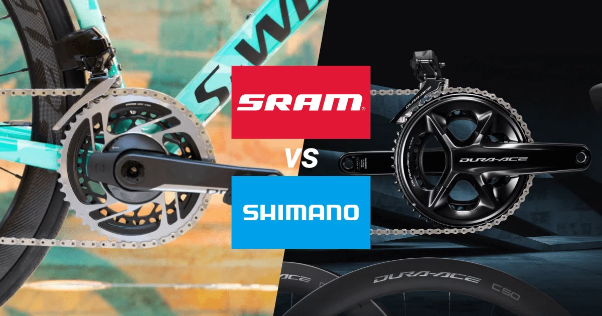

SRAM vs Shimano: cosa cambia e quale scegliere
Lo scontro tra SRAM e Shimano riguarda filosofia progettuale, innovazione e diffusione sul mercato. SRAM spinge su wireless e leggerezza, Shimano offre ampia compatibilità e affidabilità.
Dettagli tecnici
Analisi su cambio, comando e gestione della trasmissione sotto sforzo.